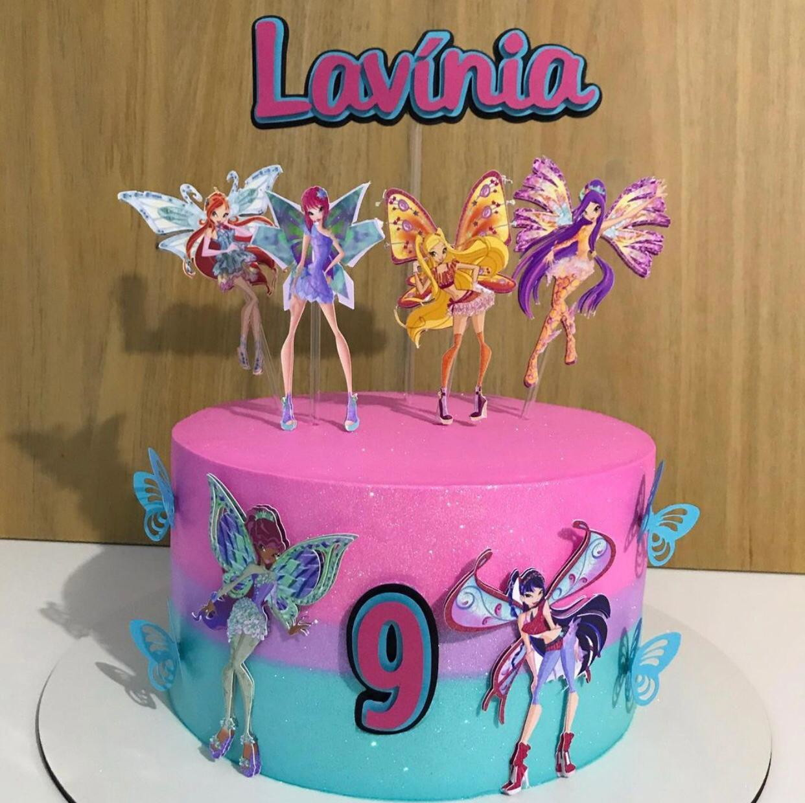

Bolo em 15 minutos
Faça um bolo sem saber cozinhar
Por Jacquim
Preciso saber cozinhar?
Faça deliciosos bolos de todos os sabores
sem nenhuma ingrediente ou experiencia na cozinha. Não seja a
vergonha da profisão.
Ingredientes
- Farinha
- Ovo
- Açucar
- Leite
- Fermento
- Quebrar os ovos
- Misturar juntos com farinha
- Adicionar açucar em fermento
- Assar por 12 minutos
Resultado
